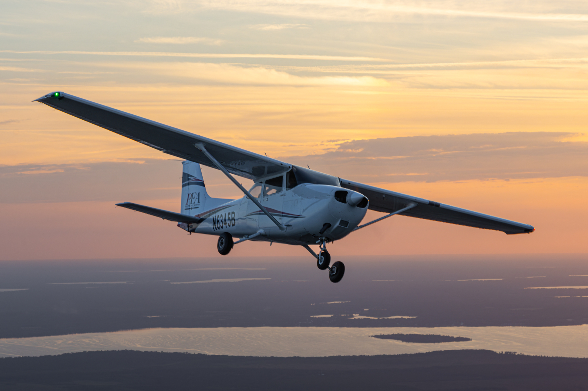
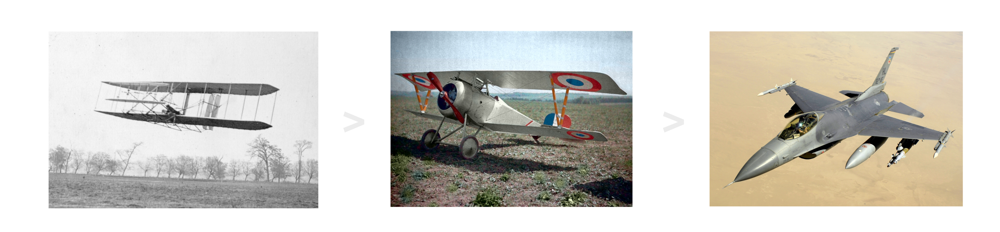

Na tej stronie znajdziesz różne informacje o samolotach, ich producentach i inne rzeczy.
Zobacz pasek u góry lub zjedź na dół.
Ta strona zawiera informacje o firmach, typach i użytkach samolotów.
Ale najpierw szybki wstęp, do czego są samoloty?
Te latające pojazdy używane są w transporcie ludzi, towaru i nawet w wojsku.
Samolot został stworzony przez braci Wright (Orville'a i Wilbura),
Który odbył swój pierwszy lot 17 grudnia 1903 roku w Kitty Hawk w Karolinie Północnej.
Ich maszyna, nazwana Wright Flyer, była pierwszym w pełni kontrolowanym samolotem napędzanym silnikiem spalinowym,
A lot trwał 12 sekund i pokonał dystans 37 metrów.

(1) Wright Flyer'a - pierwszy samolot zbudowany
(2) Nieuport 17 - samolot myśliwski z pierwszej wojny światowej produkowany przez Francję
(3) F-16 Fighting Falcon - myśliwiec czwartej generacji produkowany przez USA